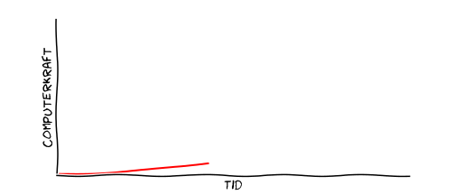
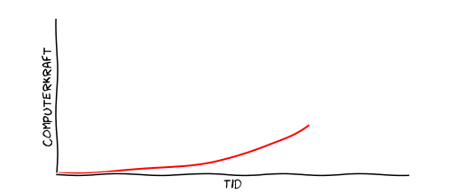
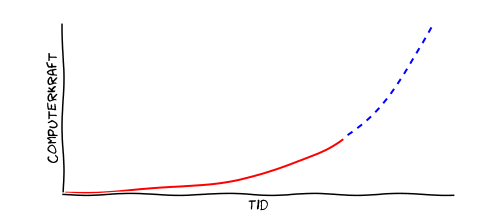

Hvorfor skal vi tage kunstig intelligens alvorligt?
Kristoffer Stensbo-Smidt
Ph.d.-studerende, Datalogisk Institut, Københavns UniversitetKl. 6:47
Kl. 8:32
Kl. 16:03
Kl. 20:17
Hvad er kunstig intelligens?


Kunstig intelligens erstatter din hjerne,
ikke dine muskler
Hvor langt er vi i dag?
Kunstig intelligens er ikke science fiction
– det er her allerede!
Kunstig intelligens kan allerede meget...
- databehandling
- tekstresuméer
- indsamling af information
- support
- svare på mails og telefoner

Hvorfor nu?
Ngram Viewer
Nye metoder og algoritmer
Kilde: Yoshua Bengio
Computerkraft
Eksponentiel udvikling



Vi er stadig ikke i mål
- talegenkendelse
- billedgenkendelse
- tekstoversættelse
- besvare spørgsmål
- dialog-/samtale-systemer
- selvkørende biler
- generel unsupervised learning
Kreativ tænkning
Social interaktion
Ledelse
Det ka' jo aldrig gå værre end hiel gal
– De Nattergale